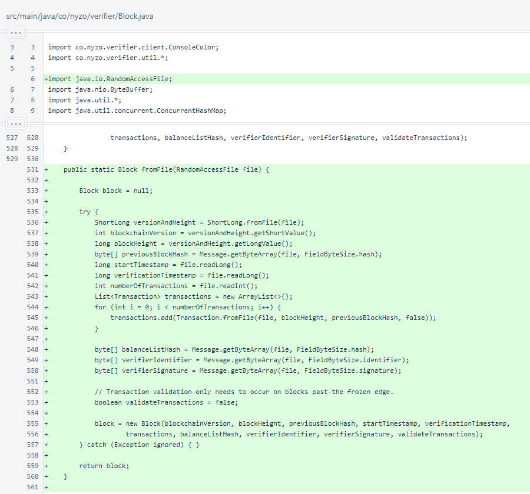
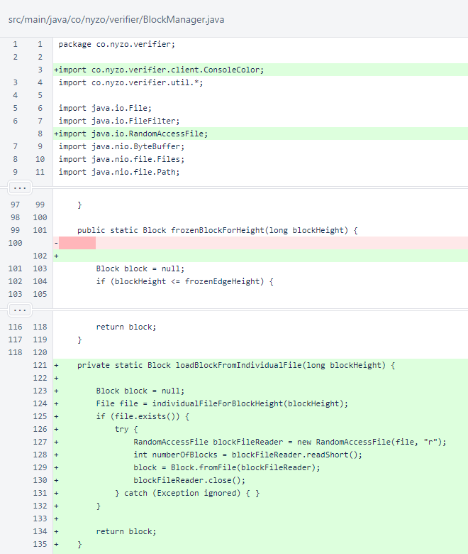
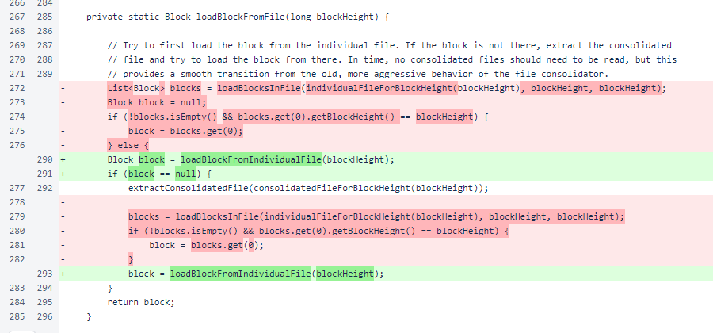
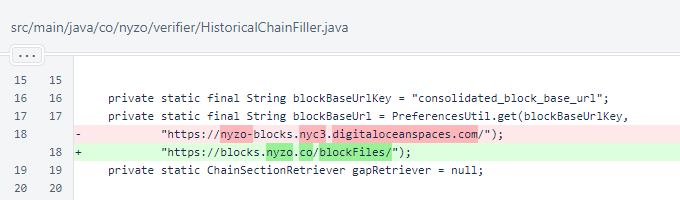
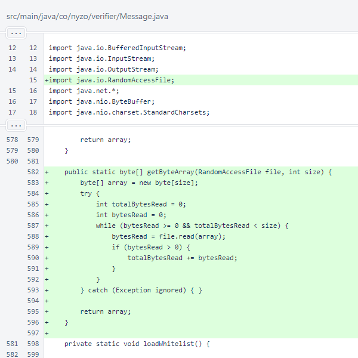
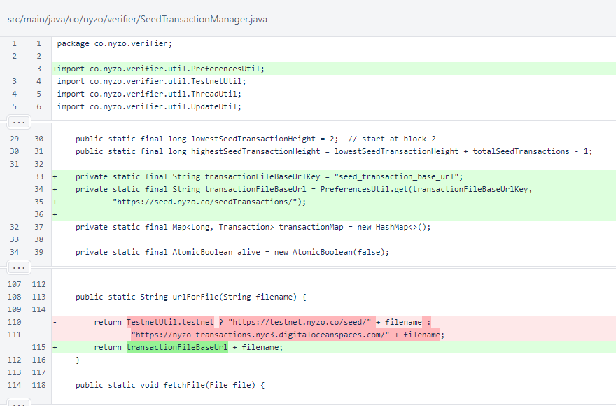
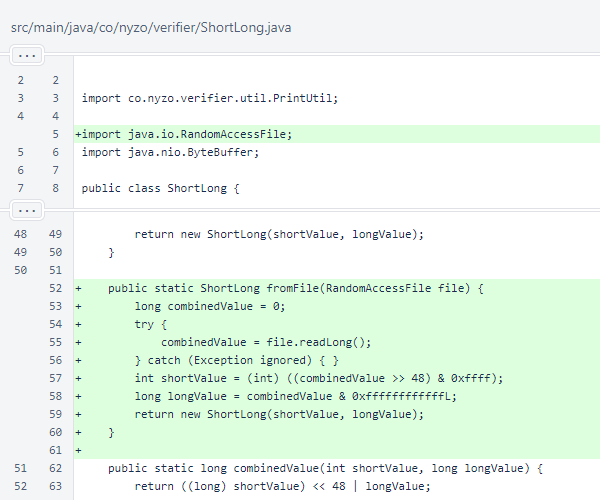

Nyzo version 586 (commit on GitHub) provides significant improvements to the initialization process for BlockManager. It also updates URLs for seed transactions and consolidated block files.
This version affects all run modes that use the BlockManager, SeedTransactionManager, or HistoricalChainFiller.
This version is in response to two problems. First, the growth in balance list sizes is revealing an inefficiency in the block loading process. Second, excessive bandwidth usage is causing us to accrue excessive expenses, and we need to bring those expenses under control.
Please update to this version soon. We are currently paying for over 14 TB of bandwidth per day, and this is exceptionally expensive. This is also more than 300 times the bandwidth that the system should be using with the current cycle and queue sizes. While we are willing to continue hosting files to benefit the community, we need to be able to control bandwidth usage. The URL changes in this version will allow us to blacklist abusive downloaders to reserve bandwidth for legitimate sources. We will deactivate the old URLs as soon as possible to try to control costs. If you have not updated to this version by that time, your verifier and sentinel will no longer be able to download seed transaction and consolidated block files. The consolidated block files allow for faster recovery, and the seed transactions are necessary for generating transaction fees. If you do not update before we deactivate the old URLs, your verifier earnings will be reduced.
Of course, anyone is welcome to host their own seed transaction and consolidated block files, and we encourage the community to set up alternate download sources. Setting up a source of either of these is easy, and it will increase the decentralization of the system. Both URLs are now specified as preferences, so alternate URLs can be used without modifying the source code.
In Block, the fromFile() method was added for reading blocks directly from files. This method parallels the fromByteBuffer() method.
In BlockManager, the loadBlockFromIndividualFile() method was added as an optimized method for loading only a Block object from an individual file. Importantly, this method bypasses loading the entire block file, which includes a BalanceList, into memory. In testing, total verifier initialization time was reduced by more than 85% on our verifiers after implementing this method.
The BlockManager.loadBlockFromFile() method now uses the new loadBlockFromIndividualFile() method.
In HistoricalChainFiller, the Digital Ocean default base URL has been replaced with the new blocks.nyzo.co URL.
In Message, an overload of getByteArray() has been added to facilitate deserialization of Nyzo objects from files.
In SeedTransactionManager, the hard-coded base URL has been replaced with a value retrieved from preferences. The default value for this is the new seed.nyzo.co data source.
In ShortLong, the new fromFile() method parallels the fromByteBuffer() method.
In Transaction, the new fromFile() method parallels the fromByteBuffer() method. We are looking now at reducing code duplication by reusing the fromByteBuffer() methods to eliminate the need for the parallel fromFile() methods. If we are successful, this will likely involve a custom subclass of ByteBuffer that reads values from an instance of RandomAccessFile on demand.